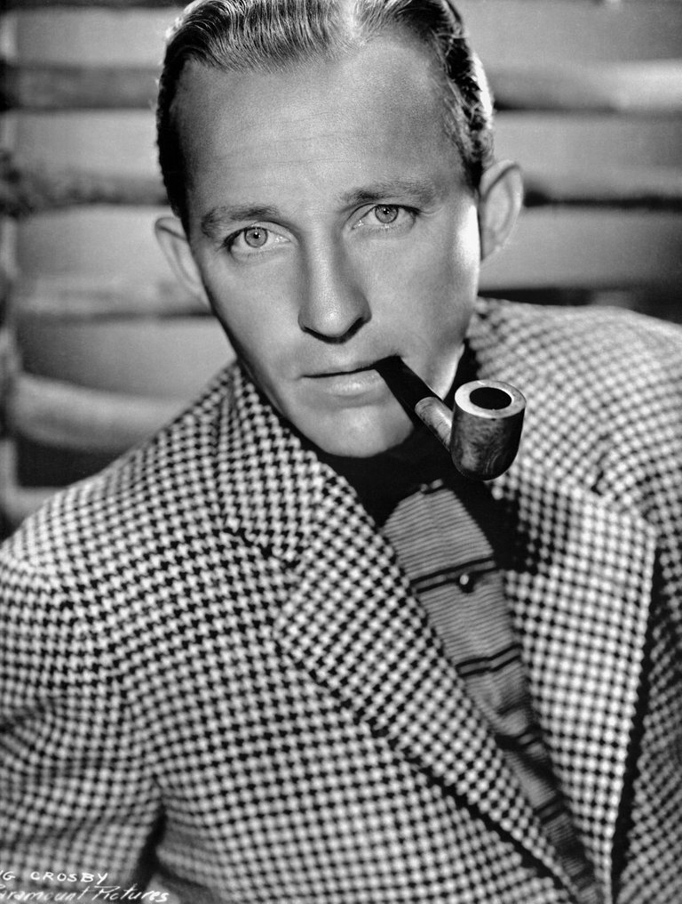
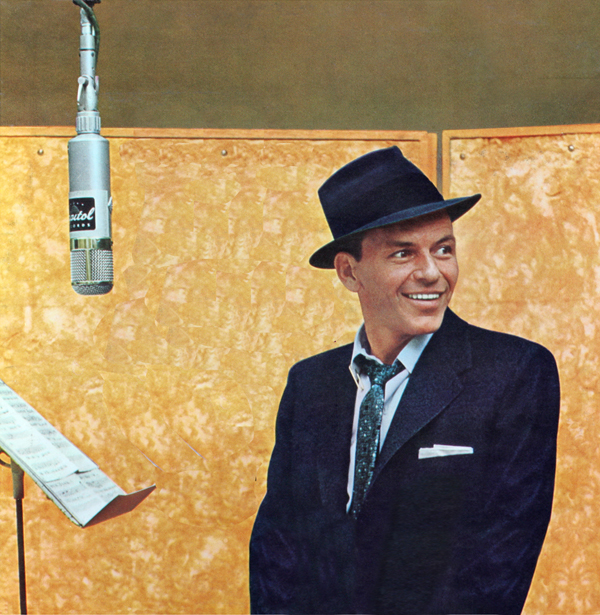

In this page I will talk about my personal likings and my hobbies!
Most of my music taste ranges from pop, jazz/big band, and rock'n'roll from the 20th century. Decades range from the 30's to the 70's (Maybe 80's). There's almost never a day where I DON'T listen to music. It always lifts my spirits up, or makes me feel relaxed. Whether it's Spotify, on my record player, or my CD player, there's usually something blasting in my room more often than not.
I would say mathematics or science would be my most enjoyable subjects at school. Although they can get really confusing at times, ESPECIALLY because I'm taking Calculus and Physics 2 AP at the moment. At least they can get interesting sometimes. But they're certainly better than English or History.